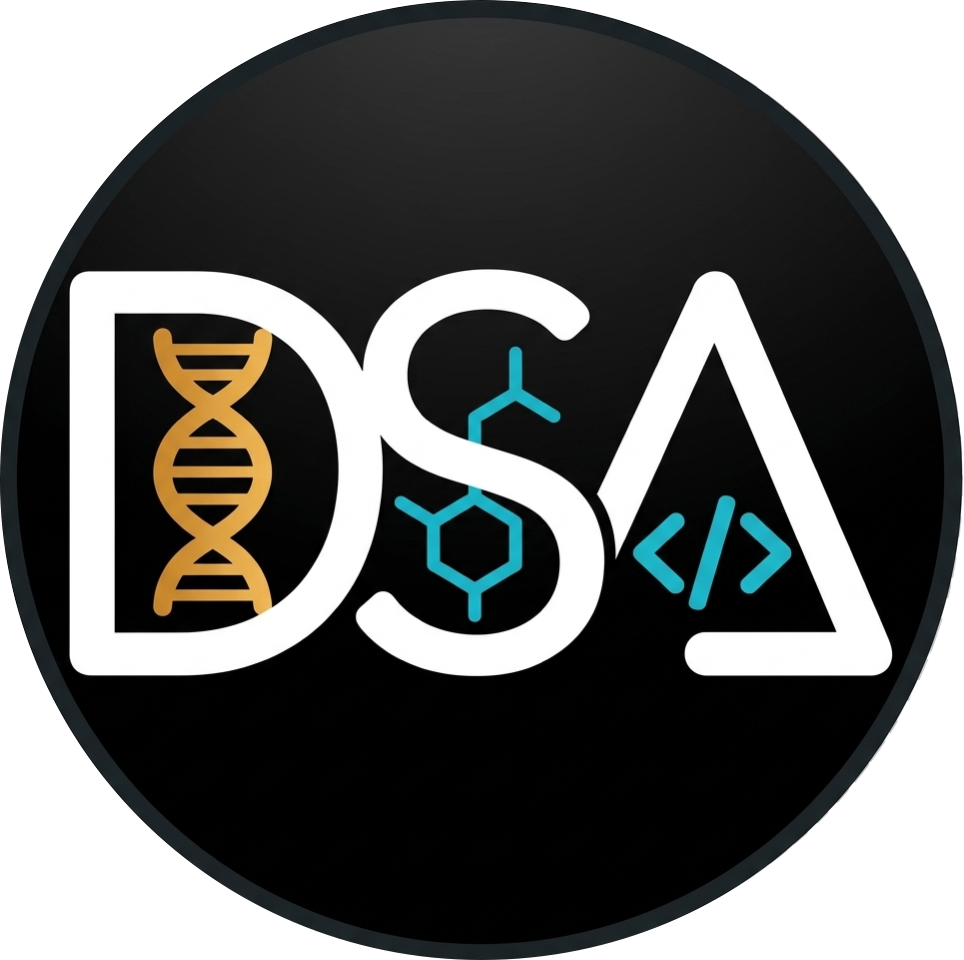

Genero datos en el laboratorio y los transformo en evidencia para la toma de decisiones
Microbiólogo Investigador Renacyt Nivel VI con formación en biología molecular, bioinformática y análisis de datos. Experiencia en el monitoreo de la red nacional de laboratorios de VIH/Hepatitis y asistente de investigación en múltiples proyectos financiados. Línea de investigación en epidemiología molecular de patógenos de importancia en salud pública. Con particular interés en el desarrollo de aplicaciones para la automatización de procesos y predicción de eventos.
Bioinformática:
Linux/Ubuntu, Genómica, Metagenómica
Manejo de Bases de datos:
Microsoft Excel, SQL, R/RStudio
Análisis Estadísticos y Visualización de datos:
R/Rstudio, Power BI, Python
Georreferenciación y Análisis espacial:
R/RStudio, Python